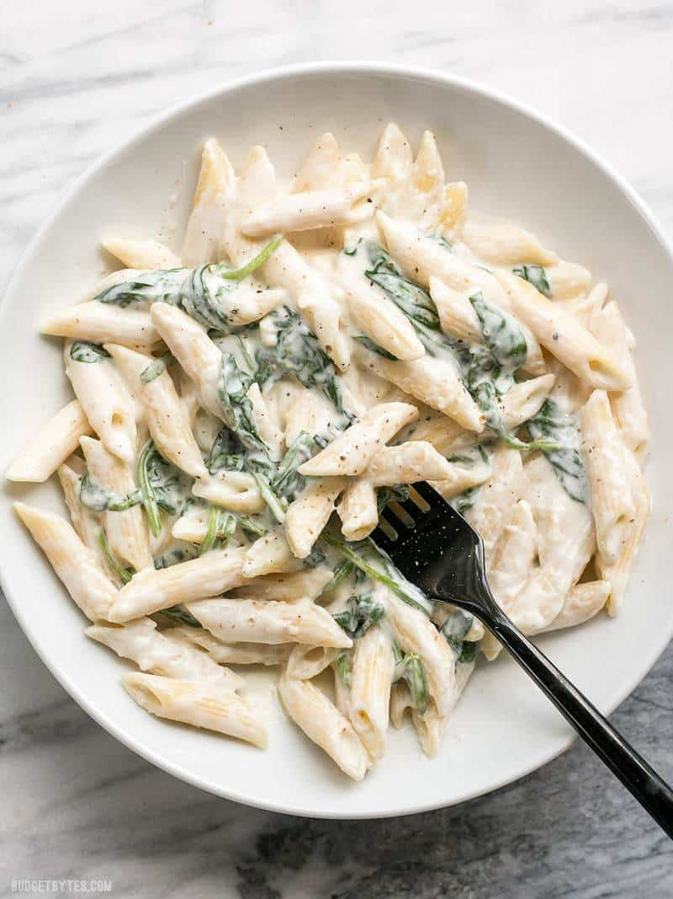

Spinach Alfredo Pasta

Description
Introducing our delectable Spinach Alfredo recipe—a harmonious fusion of creamy indulgence and wholesome greens. Begin by crafting a velvety Alfredo sauce, marrying butter, cream, and garlic into a luscious base. Then, gently wilt fresh spinach leaves into the sauce, infusing it with vibrant color and a burst of earthy flavor. Toss the luxuriant sauce with al dente pasta, ensuring each strand is enveloped in richness. Serve garnished with a sprinkle of grated Parmesan and a hint of freshly ground black pepper, elevating every bite to a symphony of savory delight. Perfect for a cozy dinner or a gathering with loved ones, this Spinach Alfredo recipe is a true testament to the marriage of simplicity and elegance on the plate.
Ingredients
- 12 oz. Penne pasta
- 2 tbsp butter
- 2 cloves garlic minced
- 2 cups whole milk
- 6 oz. cream cheese
- 3/4 cup grated Parmesan
- 1/4 tsp salt
- Freshly cracked black pepper
- 4 cups baby spinach
Equipment
- 1 large pot
- 1 deep skillet
Instructions
- Bring a large pot of water to a boil to cook the pasta. Once boiling, add the pasta and cook until al dente. Drain the pasta in a colander.
- While the pasta is cooking, prepare the sauce. Add the butter and minced garlic to a deep skillet or pot and sauté over medium heat for 1-2 minutes, or just until the garlic is soft and fragrant, but not brown.
- Turn the heat down to medium-low. Add the milk to the skillet along with the cream cheese (cut into chunks). Heat the milk and cream cheese while whisking, until the cream cheese has fully melted into the milk.
- Whisk in the grated Parmesan cheese and continue to whisk as the sauce comes up to a gentle simmer. When it reaches a simmer, the sauce will thicken. Turn the heat down to low to keep the sauce warm. Season the sauce with 1/4 tsp salt and a generous amount of freshly cracked pepper.
- Add the fresh spinach to the sauce and stir it in until it has wilted and become limp.
- Finally, add the cooked and drained pasta to the spinach alfredo sauce and stir to combine. Serve immediately.